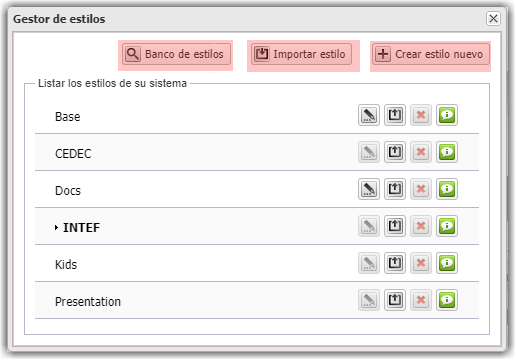
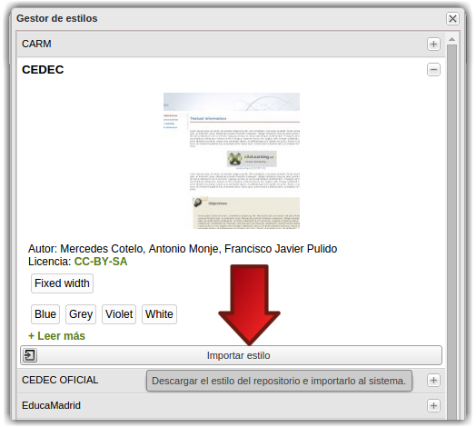

3.3. Gestor de estilos
eXeLearning nos ofrece la opción de añadir más estilos o de crear nuestro propio estilo para aplicar a los recursos. Para ello activaremos el modo avanzado, iremos al menú Estilos y haremos clic en Gestor de estilos. Desde aquí se nos ofrecen varias posibilidades:
- Ir al Banco de estilos, donde hay varios estilos subidos (algunos muy antiguos).
- Importar un estilo, para subir estilos (en archivo zip) creados por nosotros o por otro usuario.
- Crear un estilo nuevo, para crear nuestro estilo propio.

A la derecha de cada estilo nos aparecerán, en este orden, los iconos de Modificar (solo para aquellos disponibles), Exportar, Eliminar, Más información. Por último, recordamos que para eliminar un estilo es necesario no tenerlo seleccionado como estilo del material que estoy creando.
Banco de estilos
Haciendo clic en esta opción iremos a un repositorio de estilos desde donde podemos descargarlos e instalarlos.

Importar estilos
Con esta opción, podremos importar estilos creados por otros usuarios. Buscamos el archivo zip correspondiente en nuestro equipo, importamos y nos aparecerá en la lista de Estilos disponibles.
En esta dirección, se pueden obtener diversos estilos. Algunos, utilizados en la creación de REAs en Comunidades Autónomas como Andalucía o Madrid.
Crear estilo nuevo
Para crear un estilo daremos los siguientes pasos:
- Hacemos clic en "Crear estilo nuevo". En realidad no se parte de cero, sino del estilo BASE, al que se van incorporando las modificaciones que el usuario desee. También se puede modificar el estilo DOCS, pinchando en el lápiz que aparece a la derecha del nombre.
- IMPORTANTE: Al hacer clic en "Crear estilo nuevo" o en el lápiz que aparece a la derecha de BASE o DOCS se abrirá una ventana emergente (pop-up) con la herramienta de creación de estilos. Esta ventana muchas veces es bloqueada por el propio navegador. Es necesario permitir abrir esta ventana para poder utilizarlo.
- Una vez estemos dentro del Diseñador de estilos, solo tenemos que ir modificando los campos que nos interesen. Podemos ir viendo el resultado en la ventana que tenemos detrás.
- Al finalizar guardamos el estilo, que nos aparecerá con el nombre dado en la lista de estilos disponibles.


- Vídeo: Crear un estilo nuevo.

- Más información sobre Estilos (importar estilo, banco de estilos...) en este apartado del manual de eXeLearning.
Obra publicada con Licencia Creative Commons Reconocimiento Compartir igual 4.0